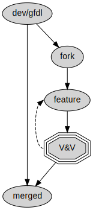
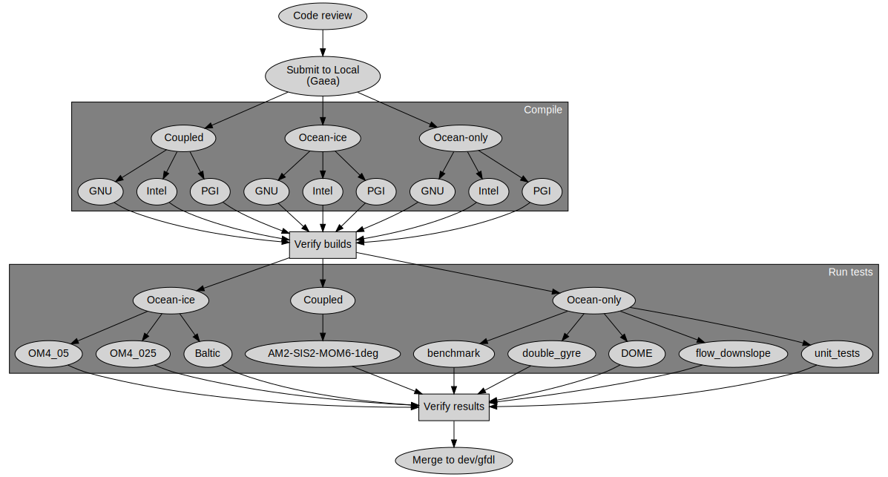

Verification and Validation of MOM6
Alistair Adcroft
Robert Hallberg
Marshall Ward
2020 June 8
So I think everyone here would agree that the MOM6 community is growing,
and will probably continue to grow...
which means the code will start to evolve in new and unexpected ways -
which is a good thing...
But that also probably means more errors and mistakes, and we of course
need to be ready for them.
So I'm going to go over some of the elements of the MOM6 testing
framework...
Partly to give you all confidence in the model, but also to help prepare
anyone who plans to contribute.
Now no one can even know if a code is "right", but there are ways to at
least ways to show if it's wrong, anr assure ourselves that it's at least
basically doing what we expect.
So when software engineering talk about this stuff, they introduce the
concepts of *verification* and *validation* when describing the testing of
software.
Which I think is a good perspective for understading how we do the
testing of MOM6.
Verification
Am I building the product right?
Validation
Am I building the right product?
Barry Boehm, Software Risk Management (1989)
Now I don't think one would be faulted for thinking that these two words are pretty much the same thing (and I might even agree), but they are trying to communicate two particular testing criteria, which I do think happens to map pretty well onto out MOM6 testing framework.
CS professor Barry Boehm quoted here has a pretty pithy way of distinguishing the two.
(Read slide)
Let's pick that apart in a bit more detail.
Verification
What are the design specifications of my model?
Does it compile on target platforms?
Are the equations dimensionally consistent?
Does parallelization change the answers?
Verification is the confirmation of design specifications.
These are very concrete and specific criteria which guide our development, and can be independently confirmed.
These are most useful if they can be verified during development.
Validation
Does our model meet operational needs?
Does it produce realistic simulations?
Are relevant physical features present?
Can I reproduce my old simulations?
Validation is an assessment of the final product.
These are the broader goals which cannot be confirmed until the project is done.
We don't design something like a AMOC into the model. We get the microphysics, the momentum and mass transport, and so on to the best of our ability, and then we essentially assert from physical principles that it all works out.
In a way, it separates the mechanics from the theoretical analysis.
A strong verification system can let us declare with great confidence that our code is free of dumb bugs, that our stencils are correct, and that we are getting the microphysics right.
A strong validation system is the assessment process, where we produce output in a careful, controlled, and reproducible manner, and can confidently declare that the model output is what we say it is.
Looking past semantics, I think this are clear and independent concepts, and they map well onto the climate model development process.
V&V in Development
So a lot of these models are kind of historical, and arguably were just invented by managers to define progress. But they all do acknowledge some form of verification and validation step.
The waterfall method (upper left) has a single stage of development, like building a bridge or launching a space rocket, so validation is not possible. Verification must be extremely thorough.
More iterative models like the V-model treat the development process as verification, and then use validation to re-define the verification steps.
Modern Agile methods define multiple development cycles, including verification and validation after each "scrum". Scrum-like methods can blur the distinction between verification and validation.
MOM contributions don't typically map onto any of these models (maybe agile if you're feeling generous), but we do embrace V&V in our development cycle.
V&V in MOM6

Fork from a community repository
Implement feature
Submit as Pull Request™ (PR)
Trigger V&V events
Automated verification
Manual validation
All contributions must pass verification and validation before merge.
It's probably been at least a decade since scientists have been encouraged to burn their CVS directories and switch to git for code management, but the figure here illustrates the basic lifecycle of a contribution.
A contributer first creates a fork of the active development branch, say dev/gfdl.
Contributor works on their new feature. Meanwhile, dev/gfdl is also evolving.
Once completed, the contributer submits it as a Pull Request via GitHub.
The submission must meet the design criteria of the source code. This is satisfied by pass through verification and validation before being considered for contribution.
MOM6 Verification
All changes sent to CI (Travis) for verification
Verification Tests
grid
Symmetric/Asymmetric memory grids
layout
1×1 and 2×1 domain decomposition
rotation
Index rotation
restart
Restart at mid-run
repro
Optimized reproducible mode
openmp
OpenMP (single-thread)
nan
NaN array initialization
dim
Dimensional scaling
Each test requires bit reproducibility
MOM6 Validation

Current validation includes over 60 tests
This slide describes the GFDL validation process, but every center will customize its own validation process.
The GFDL validation process is illustrated in this diagram.
Only a subset of the tests are shown here, for the sake of space and readability.
At least five different types of executables are required, describing different states of model coupling.
All runs are tested on the GNU, Intel, and PGI compilers.
After confirming that the code can be compiled in every case, we then run over sixty tests, times the number of compilers.
Testing typically requires nearly a half hour over 30 compute nodes.
Completion of this test ensures bit reproducibility of all very wide range of production runs which are considered essential to GFDL.
Hub Validation
Local contributions accumulate over time, becoming a dev/master PR.
Local hub submits PR, and each hub validates the PR.
Upon consensus, PR is merged into dev/master.
Solution verification
ocean.stats:
Step, Day, Truncs, Energy/Mass, Maximum CFL, Mean Sea Level, Total Mass, Mean Salin, Mean Temp, Frac Mass Err, Salin Err, Temp Err
[days] [m2 s-2] [Nondim] [m] [kg] [PSU] [degC] [Nondim] [PSU] [degC]
0, 0.000, 0, En 7.2161166068132286E-27, CFL 0.00000, SL 1.8190E-12, M 1.39637E+20, S 35.0000, T 13.3483, Me 0.00E+00, Se 0.00E+00, Te 0.00E+00
12, 0.500, 0, En 2.7781004671136538E-04, CFL 0.00011, SL 1.1369E-12, M 1.39637E+20, S 35.0000, T 13.3484, Me -6.09E-17, Se -3.90E-15, Te -1.17E-15
24, 1.000, 0, En 2.7734897826598717E-04, CFL 0.00014, SL 1.8190E-12, M 1.39637E+20, S 35.0000, T 13.3486, Me 2.89E-17, Se 8.80E-17, Te -2.88E-16Based on global metrics (energy, mass, etc)
We declare agreement if the so-called ocean.stats output files match.
This file periodoically reports several global metrics, such as the total energy (per unit mass), total mass, mean sea level, mean temperature and so it.
It is not perfect, and not all of the metrics are reported to full precision, but the energy is reported to full precision, and in nearly all cases this is sufficient to detect a regression.
Diagnostic verification
chksum_diag:
u-point: mean= 1.1239682303793666E-04 min= -6.7187595818683776E-03 max= 3.3480219779204019E-02 ocean_model-u
u-point: c= 21851 ocean_model-u
v-point: mean= 1.2076392816784489E-03 min= -8.3469699425156359E-03 max= 6.8420831486068704E-03 ocean_model-v
v-point: c= 18606 ocean_model-v
h-point: mean= 3.6490088139048595E+02 min= 9.9999999999999915E-04 max= 5.6265092225099863E+02 ocean_model-h
h-point: c= 18673 ocean_model-hMin, max, mean, bitcount for every diagnostic
A more recent, and possibly more robust, check is the chksum_diag output.
When a particular flag is enabled, this turns on every possible diagnostic and then reports its mean, min, and max values, as well as a bitcount checksum.
Not every checksum is enabled, since some can only be conditionally set based on input parameters, but generally this will include most of them.
Bit Reproducibility
Verification requires bit reproducibility
Identical code and input, different math libraries (c/o Foone )
This is two instances of the opening demo of the 1991 Super Nintendo game, "Pilotwings".
In the initial release, the plane would make a graceful landing. But in a later version, the plan would crash spectacularly.
People later inspected the data and discovered that the instruction code was identical. So what happenend?
The cartridge included a mathematical coprocessor (NEC DSP-1) for its 3D calculations. The second iteration of the coprocessor (DSP-1b) reordered some of its arithmetic to improve the accuracy of various calculations.
Unfortunately this also resulted in tiny course corrections in the flight, which eventually led to the demise of the biplane in the video.
The moral of the story is that when working with limited precision, one must be very careful!
(Confession: this was fixed-precision arithmetic, but it's basically the same problem.)
Floating Point Review
\[(-1)^s \times 1.\{\text{frac}\}\times 2^{\{\text{exp}\}}\]
Smallest fractional diff: \(2^{-52} \approx 2.2 \times 10^{-16}\)
17 digits to uniquely specify a result
Two unique representations of zero: \(\pm 0\)
Probably old news to everyone, but just as a quick review:
Floating point numbers consist of three fields:
A sign bit
A power-of-two exponent (plus an offset)
A fractional field (52 bits, in double precision)
There are a few other considerations here, like the Inf and NaN cases, or denormal numbers, but we don't need to discuss these for now.
The main thing to note for now is that the smallest fractional value is 2^-52, or about 2.2 x 10^-16. This defines a threshhold for reproducibility.
The other thing to quickly note is that both +/-0 exist in this format, which we'll mention later.
Addition Associativity
What is \(10^{-16} + 1 - 1\) ?
\[\begin{aligned}
(10^{-16} + 1) - 1 &= 0 \\
10^{-16} + (1 - 1) &\equiv 10^{-16}
\end{aligned}\]
Residuals below \(2\times10^{-16}\) may be lost.
10^-16 is below the 2x10^-16 threshold, so is lost in the first summation.
Cancellation in the second summation preserves this value.
More Addition Examples
Let \(s = 1 + 2 \times 10^{-16}\) . What is \((s + 1) - 1\) ?
\[\begin{aligned}
s + 1 &= 2 \\
(s + 1) - 1 &= 1 \neq s
\end{aligned}\]
Manipulation of \(s\) shifted the least resolvable value.
The example here is making the same point as the last one, but showing that the least resolvable value can change (or "float") during a calculation.
Even though we can initially resolve the 2 x 10^-16 fraction, this fraction is immediately lost once we add +1 to the result, shifting the fraction.
So it's not enough to just look for resolvable residuals, because this "floats" to fit the value.
Multiplication associativity
If \(a = b = 1.5\) , and \(c = 1 + 2^{-52}\) , then
\[\begin{aligned}
(a \times b) \times c &\equiv 2.25 + 2^{-51} \\
a \times (b \times c) &\equiv 2.25 + 2^{-50}
\end{aligned}\]
(Actual results depend on rounding rules)
Associativity of multiplication is overall less volatile, since the largest variations are handled in the exponent.
The fractional part can only increase the exponent, and at most only one bit is lost: (1 <= 1.xxx * 1.xxx < 4)
But it is still revelant, and trailing bits can be lost, as seen in the example here.
Note however that multiplication of the exponent 2^{exp} is a pure integer operation and is a reversible operation, up to over/underflow. (It also just happens to also manipulate the {frac}).
Sample program
program rounding
use iso_fortran_env, only : real64
implicit none
real(kind=real64) :: a, b, c
a = 1.5
b = 1.5
c = 1.0000000000000002_real64
print '(a, es23.17)', "(a * b) * c = ", (a * b) * c
print '(a, es23.17)', "a * (b * c) = ", a * (b * c)
end program rounding
Integrity of parentheses
V&V requires integrity of parentheses
GCC Fortran
gfortran -fprotect-parens ... # default
gfortran -Ofast ... # Sets -fno-protect-parensIntel Fortran
ifort -assume protect-parens # Not defaultNote: Ignoring parentheses is non-compliant! (J3/18-007r1, 10.1.5)
Parallel Summation
How to compute reproducible means or global sums?
So paretheses are effective to control short numbers of mathematical operations, but how about large numbers of sums which are not necessarily known?
Such as, say, the total mass or energy when your solution is distributed over many CPUs or MPI ranks?
The straightforward solution is perhaps to just add the numbers in a predictable order. But some of the problems:
we would need to gather all of the numbers before starting the sum
Large numbers of sums have the potential to create cumulant roundoff errors.
A strong alternative (used in MOM6) is to use a fixed-precision arithmetic represented over multiple bins...
(TODO)
Associative Scaling
Recall the floating point format
\[\phi \equiv (-1)^{\color{yellow}s} \times 2^{\color{yellow}M}
\times (1 + {\color{yellow}\alpha})\]
Power-of-two multiplication is associative
\[2^N \times \phi \times 2^{-N} \equiv \phi\]
Dimension Scaling
Fields rescaled by dimensions should be invariant
\[\begin{aligned}
u^{n+1} &= u^{n} + \Delta t \times \mathcal{F} \\
{\color{yellow}2^{L-T}} u^{n+1} &= {\color{yellow}2^{L-T}} u^{n}
+ {\color{yellow}2^T} \Delta t
\times {\color{yellow}2^{L - 2T}} \mathcal{F}
\end{aligned}\]
Dimensional factors
s
T
Time
m
L
Horizontal length
m
H
Layer thickness
m
Z
Vertical length
kg/m3
R
Density
J/kg
Q
Enthalpy
Defining Dimensions
Input parameters
call get_param(... , "DT", ... , scale=US%s_to_T)Explicit constants
eps_vel = 1.0e-10 * US%m_s_to_L_T
ustar = 0.01 * US%m_to_Z * US%T_to_sDiagnostic registration
call register_diag_field(..., "u", ... , conversion=US%L_T_to_m_s)
The intention is that all variables will be immediately converted from MKS to rescaled units, and manipulated in rescaled form, and then converted back to MKS on output (typically as diagnostic).
The exception is any hard-coded dimensional constants, such as a minimum threshold velocity or perhaps a ustar in some mixing algorithm.
For the most part, Bob has completed this work, and all equations are being tested for dimensional consistency.
But if for some reason something has not been scaled, it is possible to rescale and descale any intermediate variables.
Index Rotation
I call it an "index rotation" here since there is no physical rotation of the system here.
No physical rotation is ever applied to the system, neither the fields themselves nor the coordinates.
What is being rotated is the index map of the fields.
Everything here is rotated: the fields, the topographies, the forcings, even the coordinates. The net result is nothing is r
Rotation Invariance
Solutions must be invariant to index rotation , e.g.:
\[\phi(i',j') = \phi(j, N-i)\]
Both fields and coordinates are remapped.
Note: \(u\) and \(v\) are velocities along \(i\) and \(j\) !
Rotational Consistency
beta_topo_x = -CS%MEKE_topographic_beta * FatH * 0.5 * ( &
(G%bathyT(i+1,j)-G%bathyT(i,j)) * G%IdxCu(I,j) &
/ max(G%bathyT(i+1,j),G%bathyT(i,j), GV%H_subroundoff) &
+ (G%bathyT(i,j)-G%bathyT(i-1,j)) * G%IdxCu(I-1,j) &
/ max(G%bathyT(i,j),G%bathyT(i-1,j), GV%H_subroundoff) )
beta_topo_y = -CS%MEKE_topographic_beta * FatH * 0.5 * ( &
(G%bathyT(i,j+1)-G%bathyT(i,j)) * G%IdyCv(i,J) &
/ max(G%bathyT(i,j+1),G%bathyT(i,j), GV%H_subroundoff) + &
(G%bathyT(i,j)-G%bathyT(i,j-1)) * G%IdyCv(i,J-1) &
/ max(G%bathyT(i,j),G%bathyT(i,j-1), GV%H_subroundoff) )Index rotation ensures directional consistency
Invariant stencils
\(\phi^{(c)}_{i,j} = \frac{1}{4} (\phi_A + \phi_B + \phi_C + \phi_D)\)
\(\frac{1}{4} ( (\phi_A + \phi_B) + (\phi_C + \phi_D) )\)
\(\frac{1}{4} ( (\phi_A + \phi_D) + (\phi_B + \phi_C) )\)
The ideal outcome is to construct the stencil in a rotationally invariant form.
The first example will evaluate its terms in a different order after a quarter turn.
The second form is rotationally invariant to any number of quarter turns.
Rotational ordering
When all else fails, reorder the algorithm:
subroutine advect_tracer(...)
! ...
x_first = modulo(turns, 2) == 1
if (x_first) then
call advect_x(...)
call advect_y(...)
else
call advect_y(...)
call advect_x(...)
endif
end subroutine advect_tracer
Summary
MOM6 test suite:
Verification of design requirements
Universal invariance rules
Validation of solutions
Site-specific regression tests
Bit reproducibility is essential, and achievable!
Over 40 bugs have been detected and fixed
Dimensional scaling example
https://github.com/NOAA-GFDL/MOM6/pull/921
Kd_lay(i,j,k-1) = Kd_lay(i,j,k-1) + 0.5**KS_extra(i,K)
Kd_lay(i,j,k) = Kd_lay(i,j,k) + 0.5**KS_extra(i,K)\(\ldots + \left(\tfrac{1}{2}\right)^{\kappa_S}\) ?
Actually discovered during implementation of the dimensional scaling, rather than detected by the dimensional scaling test. But it's the sort of thing that would have been found...
Rotational example
https://github.com/NOAA-GFDL/MOM6/pull/1050
subroutine thickness_diffuse_full
!...
Work_u(I,j) = Work_u(I,j) + G_scale * (...)
Work_v(i,J) = Work_v(i,J) - G_scale * (...)
!...
end subroutine thickness_diffuse_full
Indexing example
Assumed 1-based start index
subroutine register_time_deriv(...)
real, dimension(:,:,:), target :: f_ptr
real, dimension(:,:,:), target :: deriv_ptr
! ...
end subroutine register_time_derivFails for 0-based symmetric memory grids!
Another indexing example
78d2dc3ee9a018f30bc666bd574e21fb7786403d
Extended domain to accommodate symmetric grids:
do J=js,je ; do i=is,ie
h_vel = 0.5*((htot_fast(i,j) + htot_fast(i+1,j)) + h_neglect)
uDml_diag(I,j) = uDml_diag(I,j) / (0.01*h_vel) * G%IdyCu(I,j) * (PSI(0.)-PSI(-.01))
enddo ; enddodo J=js,je ; do i=is-1,ie
h_vel = 0.5*((htot_fast(i,j) + htot_fast(i+1,j)) + h_neglect)
uDml_diag(I,j) = uDml_diag(I,j) / (0.01*h_vel) * G%IdyCu(I,j) * (PSI(0.)-PSI(-.01))
enddo ; enddo
Development Guidelines
Use parentheses!
Are they honored?
Am I preserving residuals?
Use reproducing_sum()
Even better: Don't do global sums!
Assign dimensions
Use rotationally invariant stencils
Test early and often